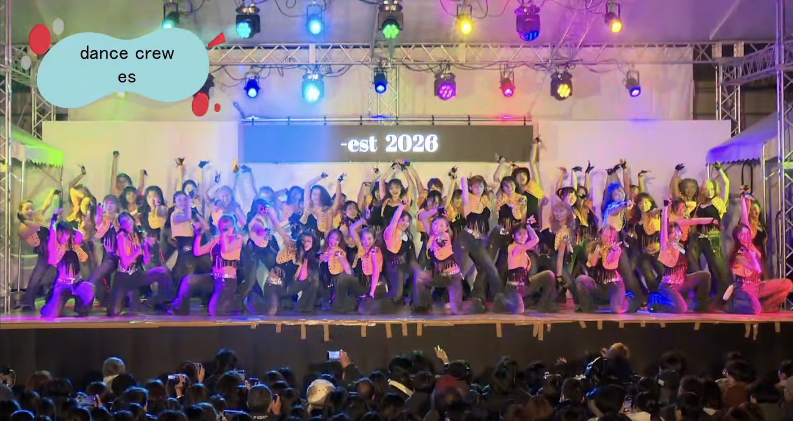
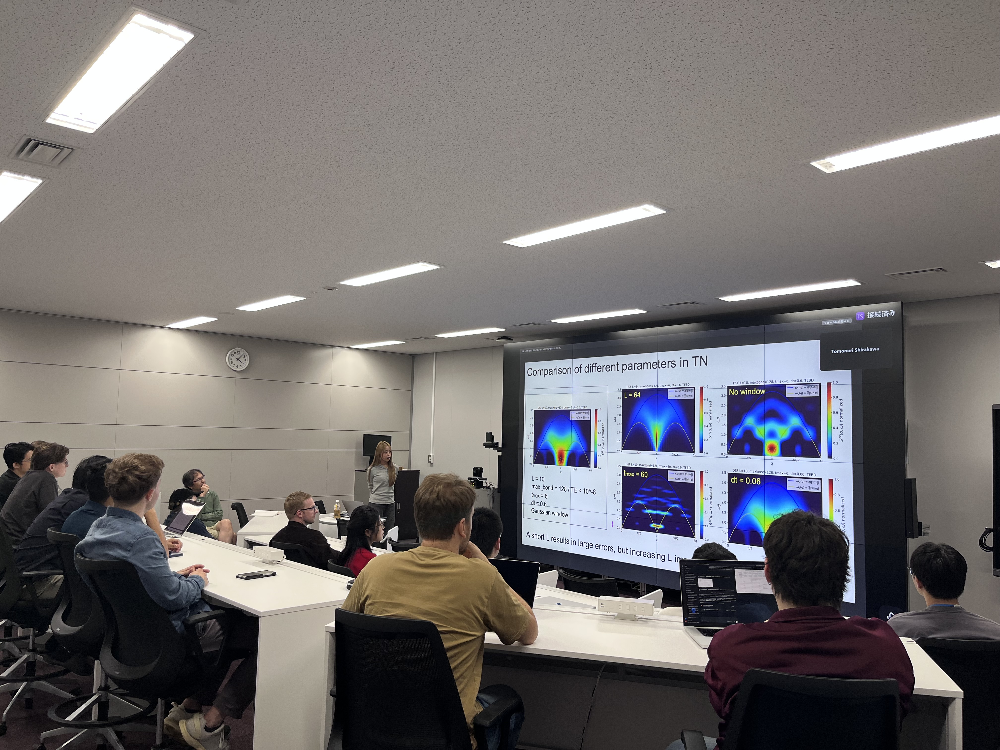
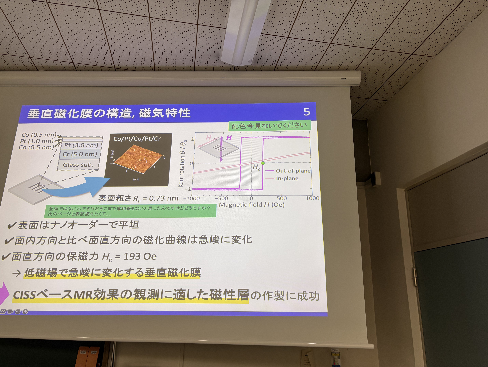
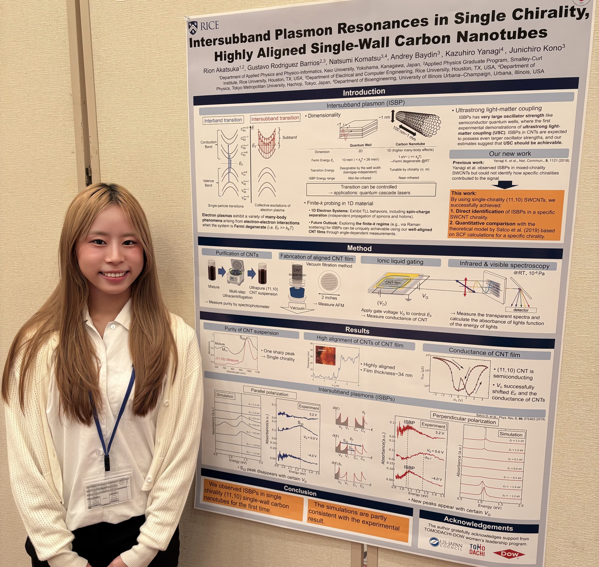
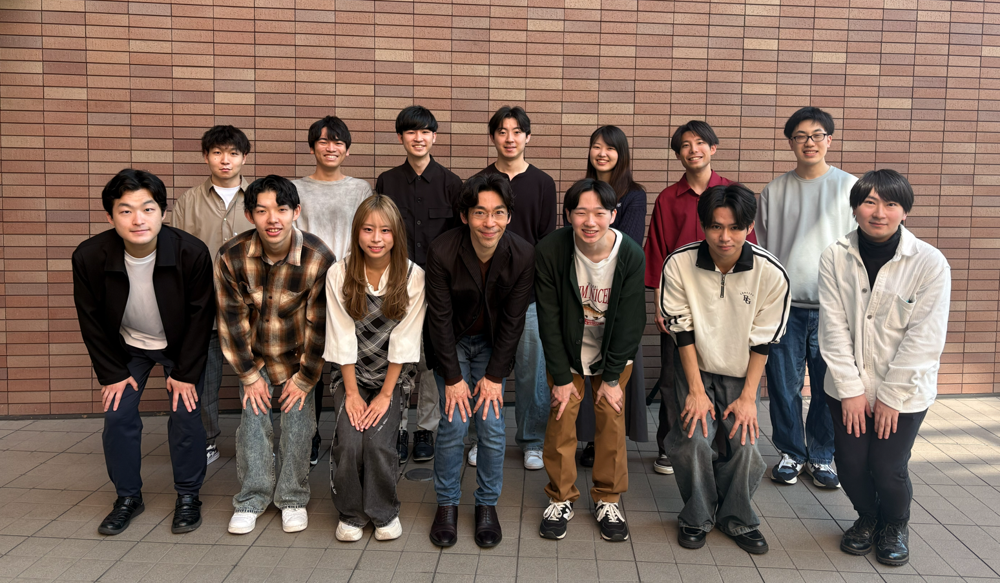
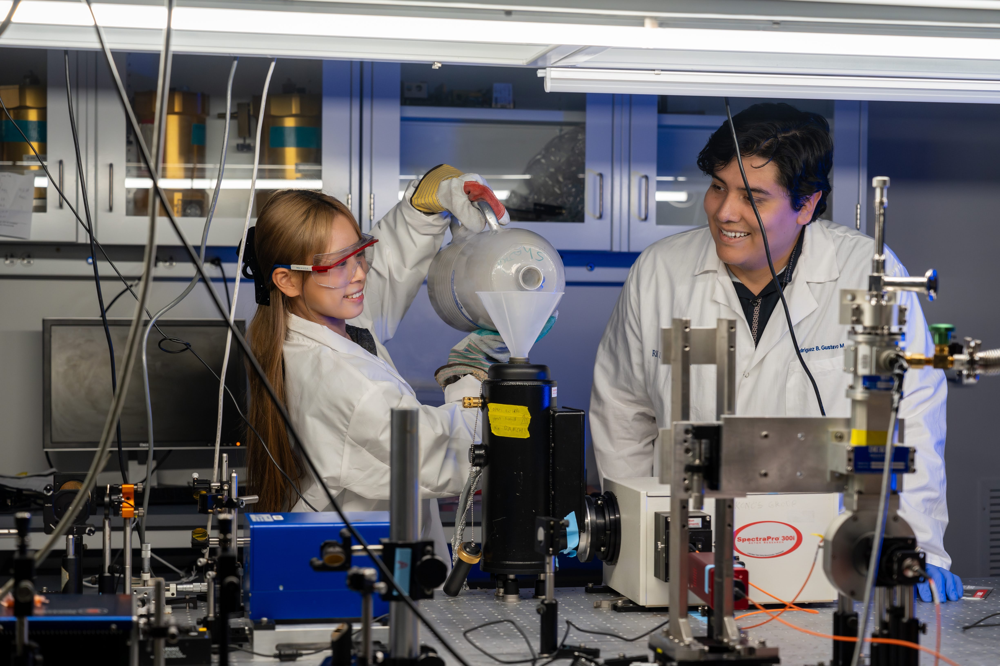
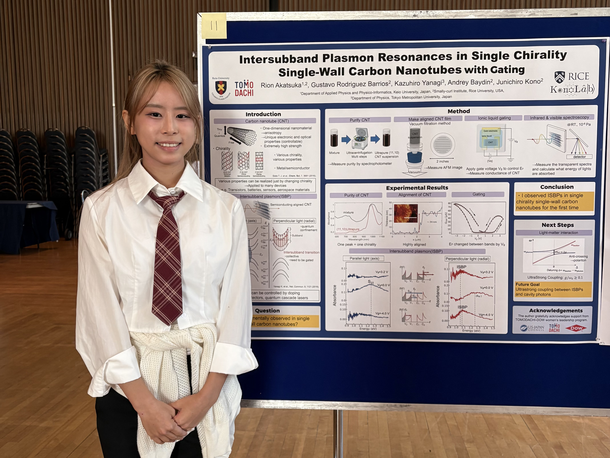
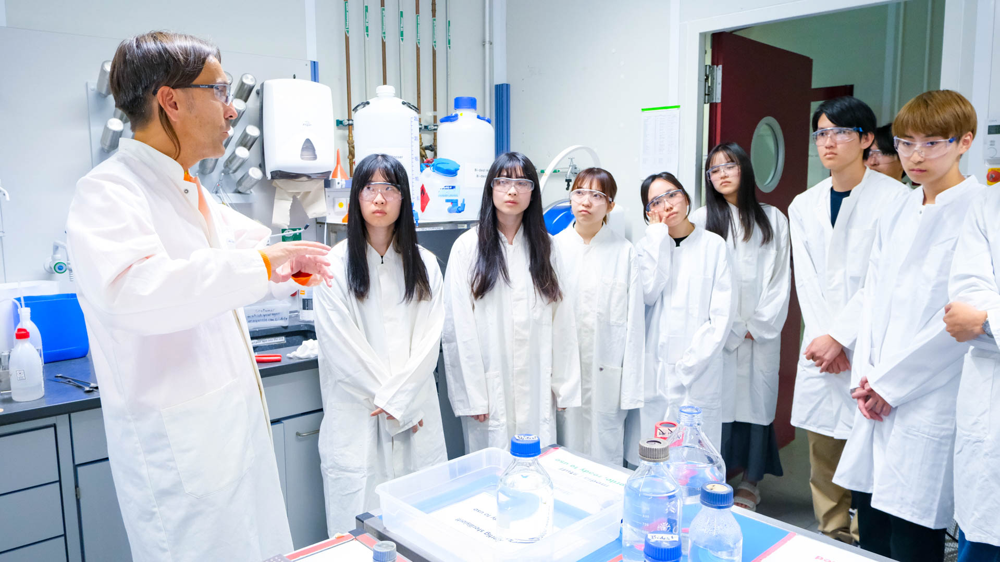

Dancing at Mita Festival

I took to the stage and performed a dance at Mita Festival!
Research & activities

I took to the stage and performed a dance at Mita Festival!

I participated in a research internship at the RIKEN Center for Computational Science, where I learned tensor network calculations and quantum computing methods for quantum many-body systems!

I presented my research on chirality-induced spin selectivity (CISS) at the Kaiju Lab at a departmental presentation conference and was thrilled to receive the Best Presenter Award for first place in my session!

I attended my first international conference, WONTON 2026! After returning to Japan from Rice University, I carried out theoretical calculations and compared them with experimental results. I presented this work in a poster session. I also learned so much from the many talks throughout the conference!

I joined the Kaiju Lab at Keio University and will be conducting my undergraduate thesis research in spintronics!


I was excited to join the 2025–2026 TOMODACHI STEM Women’s Leadership and Research Program as one of ten selected female undergraduate students from Japan, alongside ten participants from Taiwan. During the program, I completed a five-week research internship at Rice University under the supervision of Professor Junichiro Kono, working on intersubband plasmon resonance in single-chirality, highly aligned carbon nanotubes. At the final poster session, I presented my research and placed fourth out of 20 participants!

I participated in a summer school at RWTH Aachen University!